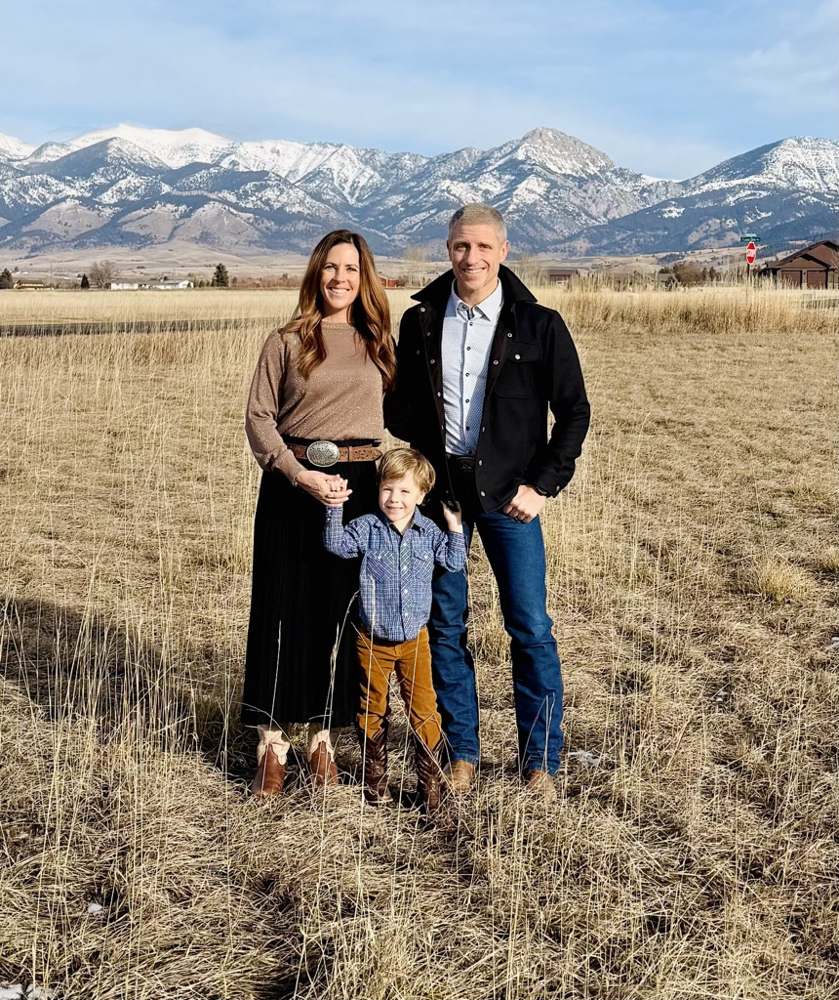

Church, in an office in Midtown Bozeman.
Come find church where you didn't expect it.
Come this SundayWhat it is
A church that meets in a home.
A Church House is exactly what it sounds like — a church that meets in a home. In our case, an office in Midtown Bozeman built for gathering people together.
Every Sunday morning we make good coffee, gather as a community, and stream the live service from Abundant Life — our parent church. After the message, we ask how we can pray for one another and then go out into the world to be living proof of a loving God to a watching world.
It's smaller than a regular church. It's warmer than streaming alone on your couch. It's a real church family.
Church Houses are a global movement. Homes and offices around the world, all watching the same Abundant Life service every Sunday, all built on the same idea: real church doesn't need a building. It needs people, the Word, and Jesus in the middle of it.
The rhythm of a Sunday
Predictable enough to feel safe. Loose enough to feel human.
-
9:45AM
Doors open. Coffee, conversation, arriving.
Pour a cup of good coffee, meet a few people, settle in. On the first Sunday of every month, we do breakfast together before service.
-
10:00AM
The service streams in.
We gather everyone in the main room and watch the live service from Abundant Life — about an hour of worship and teaching from Lead Pastor Phil Hopper. The same service streamed simultaneously to Church Houses around the world.
-
afterThe message
We pause and reflect.
A quick overview of what we heard, then two questions: What did God say to you? What are you going to do about it?
-
~11:30Wrap up
Pray together. Head out when you're ready.
We take prayer requests for each other and for the week ahead. You can head home, or stay and hang out.

Who we are
Dusty & Ashley Wunderlich.
We started this Church House on March 1, 2026.
For a long time, we were faithful church attenders. We showed up. We volunteered when asked. But honestly, we lived a lot of our Christian life passively — consuming on Sundays, then back to normal on Monday morning.
Reading about the early church changed something. From a few dozen believers meeting in ordinary homes, the gospel spread across cities and continents. The model wasn't complicated. It was simple, faithful people gathered around Jesus, taking responsibility for each other, sent into the world together. Decentralized. Relational. Not built around spectators.
That's what we're trying to step into. Our office at Aspen Crossing happens to be a good place to gather people around coffee and good conversation — so that's where we meet. Not because we have it all figured out. Because we don't — and we'd rather figure it out together than alone.
We're members of Abundant Life Church, the global church family whose service we stream each week. We're part of a growing movement of Church Houses here in the Gallatin Valley and around the world.
May God bless this house, this community, and the work He's beginning here.
Also here
Paradigm Post is launching in Bozeman.
This office isn't just a Sunday thing. In June 2026, three of our Church House members — Aaron, Rachel, and Hannah McGraw — are launching Paradigm Post Bozeman, the local outpost of Abundant Life's young adult ministry, meeting in this same space.
For over ten years, Paradigm has gathered young adults in Kansas City to wrestle with real-life questions through a Christian lens: dating, work, money, mental health, faith, purpose. The kind of conversations that matter when you're figuring out adulthood and want more than what culture is offering.
Now it's coming to Bozeman.
If you're between 18 and your mid-30s and looking for that kind of community — friends, teaching, honest conversation, a place to bring questions — this is for you.
What we believe
Jesus. The Bible. The historical Christian faith.
The short version is one line. The longer version is Abundant Life's full Statement of Faith — you can read it on their site.
If you have questions about what we believe, we'd love to answer them. There's no question too basic, weird, or hard. Ask us in person Sunday — or send a message below.
What to expect
Come this Sunday.
Want to come this Sunday? Or just have a question? Send us a note — we'd love to hear from you.